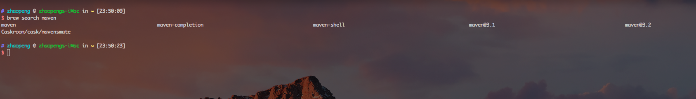
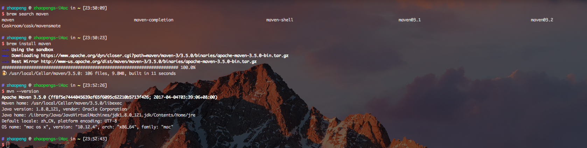

maven
maven 是 java 中的利器,必装,继续使用 brew 来安装.
安装
先搜索一下
brew search java

根据版本来安装
brew install maven
安装成功后执行 mvn --version 可以查看一下是否正确.

更改国内镜像
maven 默认使用的是国外的服务器,国内访问的话,速度就很慢了,很幸运的是阿里提供的了一个镜像,速度提升百倍,建议更换.
使用 mvn --version 可以查看到 maven 的安装目录,我的在这里/usr/local/Cellar/maven/3.5.0/libexec/conf.
修改 settings.xml 文件,在 mirrors 节点添加下面的代码,就可以了.
<mirror>
<id>nexus-aliyun</id>
<mirrorOf>*</mirrorOf>
<name>Nexus aliyun</name>
<url>http://maven.aliyun.com/nexus/content/groups/public</url>
</mirror>